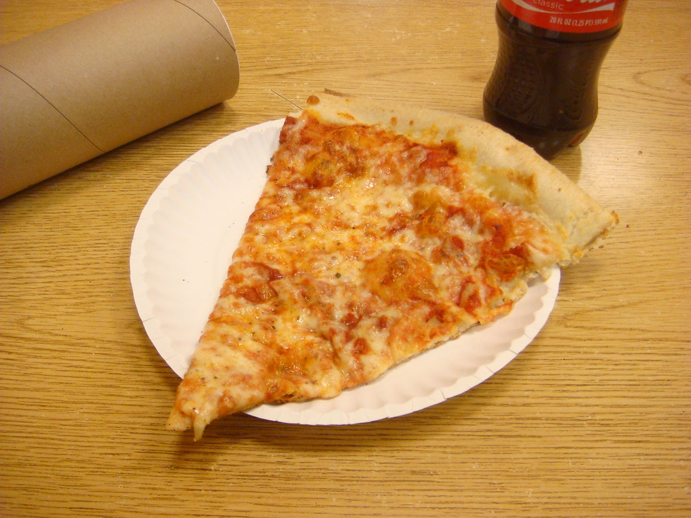

New York Style Pizza

Description
This is a no-frills New York-style pizza recipe with heaps of mozzarella cheese and fresh basil. Use it as a base and add your favorite pizza toppings if you wish.
Ingredients
- 1 Teaspoon of Active Dry Yeast
- 3/4 Cup of Warm Water (110 degrees F)
- 2 Cups of All-Purpose Flour
- 1 Teaspoon of Salt
- 2 Tablespoons of Olive Oil
- 1 (10 ounce) can of Tomato Sauce
- 1 Pound of Shredded Mozzarella Cheese
- 1/2 Cup of Grated Romano Cheese
- 1/4 Cup of Chopped Fresh Basil
- 1 Tablespoon of Dried Oregano
- 1 Teaspoon of Red Pepper Flakes
- 2 Tablespoons of Olive Oil
Steps
- Sprinkle yeast over surface of warm water in a large bowl. Let stand for 1 minute, then stir to dissolve. Mix in flour, salt, and olive oil. When dough is too thick to stir, turn out onto a floured surface and knead for 5 minutes. Knead in a little more flour if dough is too sticky. Place into an oiled bowl, cover, and set aside in a warm place to rise until doubled in bulk.
- Preheat the oven to 475 degrees F (245 degrees C). If using a pizza stone, preheat it in the oven as well, setting it on the lowest shelf.
- When dough has risen, flatten it out on a lightly floured surface. Roll or stretch out into a 12-inch circle, and place on a baking pan. If you are using a pizza stone, you may place it on a piece of parchment while preheating the stone in the oven.
- Spread tomato sauce evenly over dough. Sprinkle with oregano, mozzarella cheese, basil, Romano cheese, and red pepper flakes.
- Bake for 12 to 15 minutes in the preheated oven, until bottom of crust is browned when you lift up the edge a little, and cheese is melted and bubbly. Cool for about 5 minutes before slicing and serving.
Home